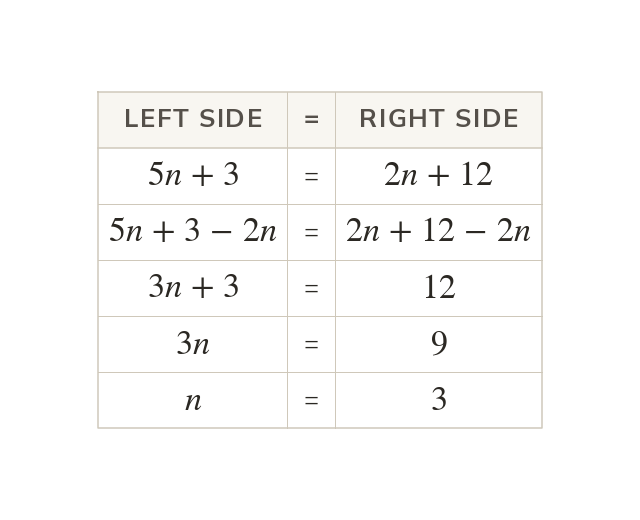

Collect onto one side first
Collect the unknown terms onto one side first. Move the smaller unknown term to avoid a negative coefficient.
When the unknown appears on both sides, the terms in the unknown are collected onto one side first. Moving the smaller unknown term avoids a negative coefficient.